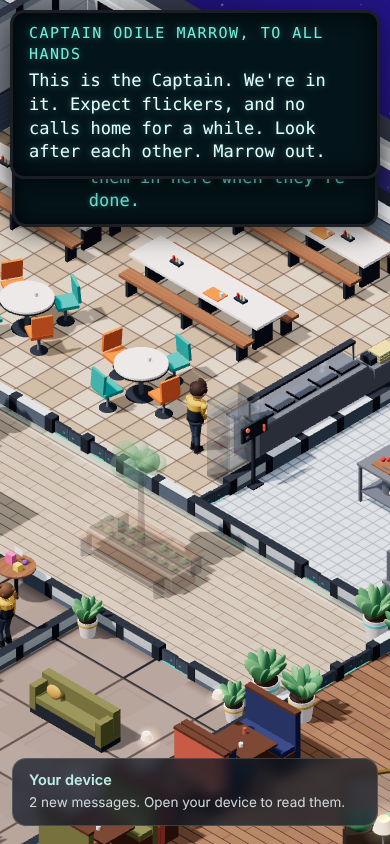

Ship-wide events: the plan
claude/events-plan-review, plans/events-plan-review.md). Based on build 0.64.2, branch claude/events-plan. This is planning only: the game itself hasn't changed. Your scope is the events up to the end of the career (the promotions). The rest are parked for later, not deleted.- The career ends on Day 26 (a Friday) with "Calder's question". The dates come from the approved Pillar 5 plan:
- Officer on Day 10
- Senior Officer on Day 16
- Engine Specialist on Day 23
- Three events are in scope: the ion storm (built and switched on), comet viewing (a short event, drafted) and the diplomatic visit (built but switched off). The rest are parked for later with their outlines (section 6).
- The ion storm works: I ran it from start to finish (pictures below). But it was built before most of the game existed, and 13 things need updating. The main ones:
- It lands on your first promotion.
- The crew's 89 storm lines never play.
- Nothing you do changes how it turns out.
- Your device's Schedule misses its meetings.
- A long sleep or a reload can lose parts of it.
- It's tangled up with the rec deck's film night.
- The game can't yet put events on chosen days. It picks days by its own rules, so the comet would land on a Monday and the visit on Day 33. The first piece of work is "the event calendar": fixed days for all three.
- About 31-40 build turns, plus the writers' time. The order is: a shared base built once, then the storm update, the comet, and the visit. Each one is built switched off, tested in Dev mode, then switched on.
- 9 questions for you are at the bottom (section 5), each with my recommendation and a box for your comments.
1. The timeline
This covers ship days 0-30. Day 1 is a Monday, and the faded days are weekends. The rank rows follow the Pillar 5 plan for a steady player. The event bars show my recommended dates (questions 2-4). The pale green bar is the visit's warning.
How I got Day 26, and the steady, busy and slow players
- Built today (0.64.2): one promotion, Junior Technician to Officer. Calder announces your test no earlier than Day 8, and only once you're "Relied on" and trained in making things safe. The test is never before Day 9. The summons is at 11:00 the next workday Calder is on, and the ceremony is the day after at 17:15. career_check's steady player passes on Day 9, is promoted on Day 10 and has the ceremony on Day 11. Its busy player run stops at Day 8, so it doesn't show a promotion day, but the gates above mean the busy player can't be promoted before Day 10 either. One line fails in 0.64.2: the busy player reaches "Relied on" on Day 4, and the check expects Day 5 or later. That's a tuning drift for the career seat.
- Planned (Pillar 5 v11):
- Day 15: Tier 3 test
- Day 16: Senior Officer
- Day 17: the toast at the Captain's table
- Nights of Days 19 and 20: the night shift
- Day 22: the Monday briefing and the Tier 4 test
- Day 23: Engine Specialist
- Day 24: the reactor
- Day 25: leading a team
- Day 26: mentoring, then Calder's question
- A slow player (career_check's lazy run) passes the test on Friday Day 26 and is promoted on Monday Day 29. A player who skips work gets Calder's "My office" talk on Day 10, the Captain's warning on Day 15, and is let go on Day 20. So events must also work for a Junior, and for no player at all after Day 20.
- Two main events fit in 27 days at the design's pace of "one every 1-2 ship weeks": the storm and the visit, with the comet in between.
The in-scope list
| Event | Kind | Today | Recommended |
|---|---|---|---|
| 1 · Ion storm | Main | Built and on. Warning Day 10, front Day 11, all-clear and party Day 13, afterglow to the end of Day 15. | Keep Days 10-15, with the career-beat guard and the commendation at the all-clear (question 2) |
| — Comet viewing | Short | Drafted (plans/comet-viewing-draft.js), not in the game. The game's own rules would place it on Monday Day 22. | Tuesday Day 16 at 21:30, one day long (question 3) |
| 2 · Diplomatic visit | Main | Built, off (draft: true). The game's rules would start it on Day 26, or Day 33 with the comet in. About 8 days aboard. | Shortened: warning Friday Day 19, greeting Monday Day 22, farewell Friday Day 26 (question 4) |
2. The ion storm today
Is it on? Yes. It's been on since 0.34.12, and the only switch is a draft flag, which the storm doesn't have and the diplomatic visit does. It starts by itself on Day 10, the first day from Day 10 that Calder is on shift. There's no way to start it by hand in the normal game; tests use eventStart('ionStorm', day), and Dev mode will need to do the same.
What I saw when I ran it at phone size (390 × 844). I started a new game, skipped the clock forward and stood where each moment happens:





How it turns out today: rough, every time the ship is left alone. The reviewer ran it many ways and got rough on every full run. Rough comes from the numbers, not from what you do:
- The call-home thread is a fixed sum that always lands exactly on its "rough" line.
- Blackouts reach "rough" whenever power is below about 87%, and even a perfect ship can't get down to "smooth".
- Spoiled meals start counting at the warning, before the storm arrives.
- The storm's prep jobs don't feed any thread at all.
What's built (the full list)
- Data:
SHIP_EVENTS.ionStorm(section 18, about line 35092). It lasts 6 days, starts on Day 10 at the earliest, needs Calder on shift, and is first inEVENT_ORDER. - Phases:
- Warning: day 0, 06:00
- Onset (the front): day 1, 14:00
- Escalation: day 2, 06:00
- Resolution (the all-clear): day 3, 10:00
- Afterglow: from day 3, 22:00, to the end of day 5
- Threads (lower is better):
- Blackout minutes: smooth at 60 or less, rough at 200 or more
- Spoiled meals: 10 / 60
- Hours the bridge goes hungry: 6 / 14
- The call-home backlog: 3 / 6
- Machines: power, comms and the chiller wear 1.5 to 3 times faster. Rolling blackouts hit one deck at a time. Storm jobs go up on the board at 08:30 on the warning day: the lounge, the ballasts, battery packs for the bridge and the Tier 3 junctions. A tidy-up job comes in the afterglow.
- Galley: storm stew, slower cooking, more grab-and-go, and 6 trays to the bridge.
- Crew:
- Command and helm work double shifts, and the Watch patrols.
- The bow lounge and the call booths close.
- 40-50% of the crew stay in.
- There's a rush on the booths on the all-clear day.
- Energy refills more slowly and social drains faster.
- Moments:
- The front (a jolt, the lights dip, flickers) and a surge on day 2 at 11:20.
- Two Captain's addresses.
- Calder's briefing, a meeting with a choice of reply.
- The Captain's all-clear, a meeting.
- The party, a gathering.
- Mail and news: Calder's warning, Vance's "Storm stations", the debrief (worded by the result), the commendation, and notes for any meeting you missed. Seven news items go to the social feed.
- Traditions: they pause during the onset and escalation. Birthdays still happen.
- After it: a commendation, for two storm jobs or one job plus a meeting. That leads on to the ready room, the Captain's table (Day 20, then every 28 days) and the bridge invite (Day 22).
- Checks: events_check parts 5-9, food_check 4h and 4i, machine_check 4c, interactions_check, and career_check (the bridge invite).
What needs updating (13 items, checked by the reviewer)
| # | What | Fix (and whose part) |
|---|---|---|
| 1 | It lands on your promotion. The warning day (Day 10) is the Officer summons day. The front (Day 11, 14:00) comes three hours before the officer ceremony. If the storm moves a day later, the clash just moves with it: the briefing lands next to Day 11's first team job, and the afterglow covers the Tier 3 test (Day 15) and the Senior Officer promotion (Day 16). | The event calendar (F0) and the career-beat guard (F1) keep the hours apart. Question 2. |
| 2 | The 89 storm lines never play. They're written for storm moments, but the event never sends the note that would trigger them. | A phase note at each phase (F2). |
| 3 | Nothing you do changes the result (see above). | New design inside the storm update: prep jobs that lower a thread, threads that count from the front, and blackout odds where a full-power ship comes out smooth. Question 6. |
| 4 | Your device misses parts of it. The Schedule shows the party but not the 09:15 briefing or the 10:00 all-clear meeting. Tracked offers "the call booths" at the front, while they're closed. There's no "Ion storm: day 2" line, and commendations aren't on your Record. | Meetings in the Schedule and Tracked, closed places hidden, a status line in the Ship app, commendations on the Record (F3, the device seat). |
| 5 | Skips and reloads lose parts of it. A sleep or skip past the end drops the all-clear, the calls score and the afterglow. One jump from before it starts to after it ends runs the whole storm in a single step: no addresses, no Mail, and it comes out "smooth". Reloading in the middle of a meeting loses that meeting for good, and its summary Mail never comes. | Every phase replayed in order, quietly, and a meeting brought back (or its summary sent) after a reload (F4). |
| 6 | Calls home are blocked only on the front day, and for any event, so the visit's greeting day would cut them too. Nothing reads the storm's "comms down" setting. | One "comms down" check, read by the call booths (F8). |
| 7 | Works puzzles and incidents have no proper storm check. The puzzle code asks for an "event day" check that doesn't exist, so it never fires. Incidents and team jobs only skip the party day. Meanwhile, if every day of an event counted, puzzles would lose 15 of Days 11-30. (The drill and the inspection only apply to Juniors, so a steady player isn't affected.) | eventDay(d) with a narrow meaning: the front, the escalation and the all-clear only. Agree it with the Pillar 5 seats (F1). |
| 8 | The rec deck is tied into the storm. The storm's first address is what moves film night to the rec deck "from this Saturday", which is the party night. So with the storm switched off, film night never moves. Pell's cheerful Mail about it arrives at the front. Two different film-night flags exist, and only one is ever set. Blackouts skip the rec deck on purpose (a lead's call in 0.83.2). The crew already stay off it during the storm. | Give the rec deck's first all-hands its own date, flag the two flags to the rec seat, and keep blackouts as they are. Question 7. |
| 9 | Your briefing choice can never hold a job. The storm jobs go up at 08:30, and the crew have taken three by 09:00, before the 09:15 briefing. So you don't earn a commendation. | Post the storm jobs when the briefing ends, holding the one you chose. |
| 10 | The Captain's banner covers the HUD on phones: the clock, the deck, the device button and the Tracked title. | Put it below the HUD's top row on phones, or make it two lines with "more in Mail" (the HUD seat). |
| 11 | Rank isn't used. The design says a Junior carries filters while a senior attends the Captain's briefing. Today everyone gets the same scenes, and the Tier 3 junction job is out of reach. | Small rank-aware parts (F5). The new lines are the head writer's. |
| 12 | The ready room and the Captain's table are used too often. The ready room hosts four scenes: the commendation summons, Pillar 5's Senior Officer scene on Day 16, and the two missed-shifts talks. The Captain's table comes on Day 20, three days after Pillar 5's Day 17 toast. And the commendation arrives only when the afterglow ends (Day 16 00:00), so it can't be part of the Day 16 scene if the storm moves. | Send the commendation at the all-clear. Question 8. |
| 13 | Small things. Three old placeholder versions (address, dialogue, camera shake) are still in the code. The framed menu has no prop. A reload inside the front's 3 minutes could replay the jolt. Day 13's evening has three traditions plus the party, over the limit of two. A blackout in Deck 4's junior common room reads 454 draw calls zoomed out (an ordinary Friday there already reads 452). Tiles and Lightdisc stop the clock, so you can sit out a blackout in a game (fine). | Clear-out in step 2. The framed menu goes to the deck architect, and the 452 to the performance seat. Storm scenes added to perf_check (F7). |
Fine as it is: traditions pause correctly, the news items arrive, two fresh runs are identical, the storm never uses random numbers, every dressing and trace exists except the framed menu, clothes and laundry aren't touched, and the visit's cabins match (Teshavi in 2-U, the second visitors' cabin, not your future suite). Dropped from version 1: "supplies run out" happened with the storm off too; it's a test effect, because no supply carts run on paper.
Size of the storm update: 8-10 turns on top of the shared base (including the threads you can move: 1-2, and unhooking the rec deck: 1).
3. The events after the storm
Shared base, built once (F0-F8), about 12-15 turns
| Piece | Why | Turns | |
|---|---|---|---|
| F0 | The event calendar: fixed start days for the three events, one main event at a time, a short event allowed beside a main one when they don't overlap, and casts checked against who's on shift (Calder is off Sundays, Vance Wednesdays and Thursdays, Sato weekends). | The game's own rules can't give the agreed dates. | 1-2 |
| F1 | eventDay(d) and the career-beat guard: a narrow "event day" (front, escalation, all-clear), plus the day's career beats that event moments steer around. | Items 1 and 7. | 2 |
| F2 | Phase notes: each phase sends a ship note, so crew lines, tap lines and chatter can react. | Item 2. | 1 |
| F3 | On your device: meetings and gatherings in the Schedule and Tracked, closed places hidden, a status line in the Ship app, and commendations on your Record. | Item 4. | 2 |
| F4 | Safe through skips and reloads: every phase replays in order, quietly. A meeting comes back, or its summary is sent, after a reload. Moments don't replay. | Items 5 and 13. | 2 |
| F5 | Parts by rank: a meeting, job or line can go only to Juniors, Officers or Seniors, with the summary by Mail to everyone else. Kept small. | Item 11, and the visit's senior briefing. | 1 |
| F6 | Dev mode hooks: start any event (even one switched off) now or at a chosen phase, end it, and see its threads live. | Your ask, and the way every event is tested before it's switched on. | 1 |
| F7 | One events check driven by each event's data: on paper, live and at phone size, with a proper pass or fail. It includes the jump test, the reload test, casts on shift, and the front, a blackout and the party added to perf_check. | So the comet and the visit don't each need a new check. | 2-3 |
| F8 | Comms down: read from the event's own setting, not from the phase. | Item 6. | 1 |
Hash keys: Pillar 6's range is 950-999, skipping 951-952. Who writes the new lines: the head writer, for the storm's rank parts, Sato's comet lines, and the visit's dinner and briefing.
Comet viewing (short) · Tuesday Day 16, 21:30 · about 2-3 turns
- Warning: the same morning. Dr. Sato's Mail at 08:00 (she's on shift on Tuesdays) and a news item. Crew mention it at dinner.
- Onset: at 21:30 the comet appears in every window, a "felt everywhere" moment: crew stop and look up. There are two gatherings, at the observatory (Deck 2) and at the bow lounge windows. You join by turning up, or by tapping Sato. It's also your first night in the Deck 2 suite, which has a window.
- Escalation: none. Resolution: it fades around 22:30. Afterglow: a crew sketch pinned up in the lounge for a week, and a day of chatter. One day long, with no score: short events always go smoothly.
- Touches: Decks 2 and 3, and the sky. A comet streak exists only while the event is on, so the "off" tests stay pixel-identical. It starts after Tiles night and Knit and natter end, so neither is cancelled.
- Reuse: nearly all of it is in the draft. New: the comet in the sky, a stronger pull to the observatory (the draft drew only 2 people), Sato's lines, and the change from 2 days to 1.
- Risks: it's on your Senior Officer promotion day. That's fine because it's optional and in the evening, but it's a busy day (question 3 offers Sunday Day 21 instead). The sky change must leave the normal sky untouched.
The diplomatic visit (main), shortened · Days 19-27 · about 9-11 turns
- Warning (Friday Day 19): Vance's Mail. Weekend jobs: make up the second visitors' cabin, fix the dining lamp, fetch the gift crates. Laundry wears faster.
- Onset (Monday Day 22): your first Monday briefing at 08:30 at the conference table is about the visit. That's the senior briefing the design promised. The greeting in the shuttle bay (Deck 5) is in the afternoon, after the Tier 4 test. Speaker Teshavi takes 2-U, and three more guests take Deck 4's guest cabins. The Watch patrols.
- Escalation (Days 23-25): one formal dinner in the Captain's quarters on Tuesday Day 23 (Vance is on; you get a seat as a Senior). Herbs from the garden. Lieutenant Holt clashes with a delegate.
- Resolution (Friday Day 26, 10:00): the gift exchange in the observation room, then the farewell in the shuttle bay. Calder's question at the Friday tea that evening closes the career.
- Afterglow: the Veyli cord sculpture in the bow lounge, chatter, and the debrief on Day 27.
- Threads (built): dinners late, cold cabins, no herbs, discourtesy.
- Touches: Decks 1-5, the galley's formal dinner, the garden, the Watch, and the guests.
- Reuse: phases, threads, meetings, gatherings, the guest system, the shuttle bay's 124 crowd spots, and the galley's Captain's-table batch.
- New:
- Guests escorted between decks.
- A Veyli look: a colour and robe variant, with no new models if possible.
- The dinner as a meeting with choices.
- The senior briefing (F5).
- Shortening it from about 8 days aboard to 4.
- Everything on the storm's list again.
- Risks: it falls in Pillar 5's busiest week (Engine Specialist, the reactor, leading a team, mentoring), so every moment needs the career-beat guard. Guest routines are new. The dinner adds draw calls on Deck 1.
4. What it depends on
Step 2, Dev mode and Pillar 5
- Step 2 (new ways of working on the one file): events reach into about ten other seats' parts of the file: crew, galley, machines, device, social, Works career, rec deck and HUD. The owners map decides who makes each edit: section 18 owns the shared base, and other seats make the small changes that read it in their own parts. The fast check and the GitHub check must include the events check with a proper pass or fail. Build on the shared branch, merged early.
- Dev mode (your ask): it needs to:
- start any event now, even one switched off (with events off, nothing is ever due, so it must start them directly);
- jump to a phase (the front, the escalation, the all-clear, the party);
- end the event and show its result;
- set your rank, so each rank's parts can be seen;
- move the clock.
- Pillar 5 steps 5-6: they set the dates the events fit around, and they need to add the "not before" days and a reachable reputation pace (see "How I got Day 26"). Agree
eventDay(d)with them before either side builds. Two more things to settle with them: the shared ready-room and Captain's-table scenes (question 8), and the new junior for Day 26's mentoring (question 9). - Order:
- Step 2
- Dev mode
- Pillar 5 steps 5-6
- Shared base F0-F8
- Storm update: switch it off, test, switch it on
- Comet: build it switched off, then switch it on
- Visit: build it switched off, then switch it on
Turn estimate
| Piece | Turns |
|---|---|
| Shared base F0-F8 (F6 inside Dev mode) | 12-15 |
| Ion storm update | 8-10 |
| Comet viewing | 2-3 |
| Diplomatic visit (shortened) | 9-11 |
| Total | about 31-40, plus the head writer's lines |
5. Questions for you
Pick an option and add a comment if you like. Each question has an id for saving. My recommendation is marked.
6. Parked for later (out of scope, kept on record)
Your rule: the events after the career's end are out of scope but kept, in case the game grows. This is the full design list in its order. Each full breakdown is in plans/pillar3-plan.md, and design-doc.md will mark these as parked (never deleted) when it's next updated.
The parked events, in order
| Order | Event | Kind | In one line | Breakdown |
|---|---|---|---|---|
| after 2 | Crew rotation day | Short | Five crew leave on a transport and five new faces arrive, with goodbyes in the lounge. (Its traditions are already built and keep running; the first is on Days 34-40. The game rotates 1-3 people each time, not 5.) | pillar3-plan.md line 396 |
| 3 | Something in the garden | Main | A creature eats the crops. Traps from the machine shop and a volunteer garden watch follow, and it becomes the ship's pet. | line 350 |
| after 3 | Power surge | Short | A junction on Deck 6 trips, and two decks lose power for a while. | line 393 |
| 4 | Shipboard illness ("the Wren cough") | Main | The infirmary fills, sick crew stay in their bunks, more jobs are left for you, and soup goes round by cart. | line 358 |
| after 4 | Founders' Day festival | Short | The whole crew together on the plaza. It's the big-crowd test, built only once a real phone handles crowds over 70. (The Founding Day tradition on Day 100 is built and stays.) | line 392 |
| 5 | Nebula drift | Main | Every window fills with colour, the sensor array overloads, and strange dreams leave the crew sleepy and chatty. A visiting scientist comes aboard. | line 365 |
| after 5 | The late supply shuttle | Short | Rationing, a bland menu and a busy machine shop, all from the numbers. | line 395 |
| 6 | Salvage | Main | The Tern flies out to a derelict, and the hold fills with odd finds. It ends in an auction in the lounge. | line 373 |
| after 6 | A Veyli vessel needs help | Short | Works sends parts, and a Veyli engineer comes aboard as a guest. | line 394 |
| 7 | The déjà vu day | Main | A time anomaly replays one day, and what you change the second time counts. | line 381 |
Already in the game data for them (left as it is): guest entries in GUESTS (Dr. Lindgren, Mara Quill, Jonah Petrie, Taavek), and the illness hook careerSick. The shared base (F0-F8) is built so any of these can be added later without new machinery.
Notes for the builders, the reviewer and the lead
- For the lead, not the user (the reviewer's question D): with the recommended dates, no short event overlaps a main event, so F0 doesn't need "a short event beside a main one's warning" yet. If question 3 picks Day 21, it does, because Day 21 falls inside the visit's warning.
- The run script loads the game through cadet_test's
Gameat 390 × 844, skips to each moment, puts the player in the room and ticks the ship minutes. The log is inplans/events-plan-run-log.json. Mail days there count from 0 ("9" is Day 10). Its "crew3: 8" is the crew drawn around the camera. The crew's plans for 12:15 give 13 people on Deck 3 on Day 12, against 22 on Day 8. - The reviewer's evidence is in
plans/events-review-shots/onclaude/events-plan-review. Version 2 takes all 4 blockers, all 17 should-fix items and the nits on board. - Day 26 has no Works Friday tea in the calendar: the "four weeks aboard" tradition (18:40) takes its slot. Pillar 5's "Calder's question at the Friday tea" needs checking against that.
- To pass on: career_check fails one line on 0.64.2 (the busy player is "Relied on" on Day 4). DEV_NOTES' header still says 0.60.7.